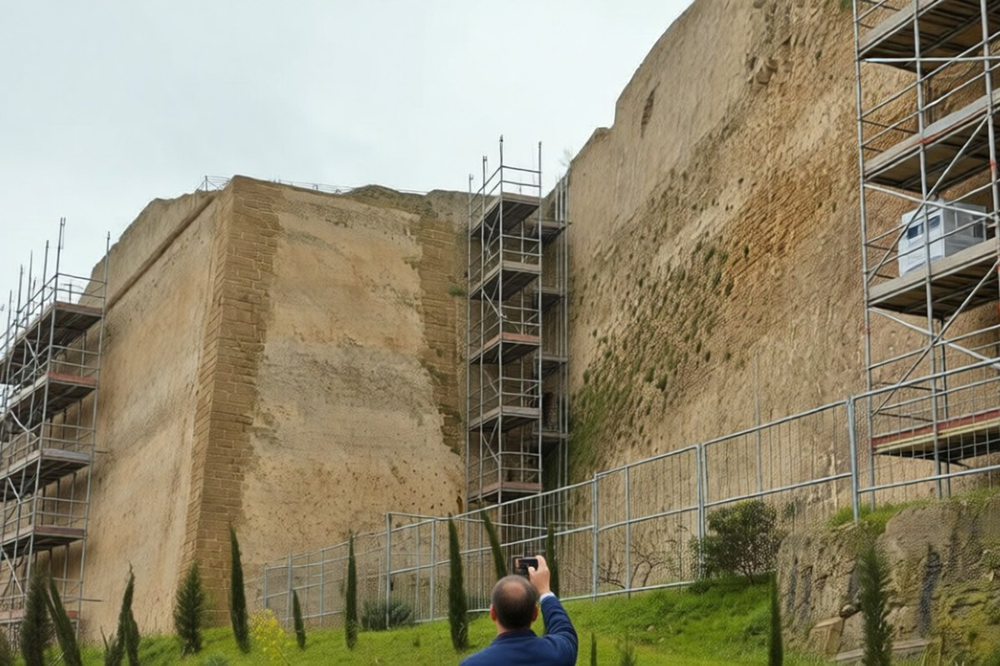

Mafia e antimafia · 11 novembre 2026
Crotone, soldi chiesti ai cantieri: incastrato da una fotografia

Due uomini in carcere per tentata estorsione aggravata dal metodo mafioso: avrebbero chiesto denaro al cantiere del castello di Carlo V e a un'impresa stradale. Un imprenditore non ha pagato e ha fotografato chi lo avvicinava.
di Franco Zanghì
L'11 novembre 2026 i carabinieri del Nucleo investigativo di Crotone hanno eseguito un'ordinanza di custodia cautelare in carcere emessa dal giudice per le indagini preliminari di Catanzaro su richiesta della Direzione distrettuale antimafia. In carcere sono finiti due uomini di 56 e 58 anni, entrambi di Crotone: l'accusa è tentata estorsione in concorso, aggravata dal metodo mafioso. Secondo gli inquirenti i due sarebbero vicini a una cosca di 'ndrangheta della città.
Il cantiere del castello
Il primo episodio contestato risale al 25 maggio 2026. Il cantiere è quello del castello di Carlo V, la fortezza del centro storico di Crotone, dove un'impresa della provincia di Cosenza sta eseguendo lavori di restauro. Secondo l'accusa i due avrebbero avvicinato il direttore del cantiere chiedendogli almeno 10.000 euro, presentati come denaro destinato al mantenimento dei detenuti.
La rotatoria e la fotografia
Il secondo episodio è del 20 luglio 2026. Un imprenditore edile di Crotone, impegnato in lavori sulle strade cittadine, viene affiancato a una rotatoria da un uomo in bicicletta: la richiesta, secondo gli inquirenti, è di «un paio di migliaia di euro».
È qui che la vicenda cambia direzione. L'imprenditore non paga: prende il telefono e fotografa l'uomo mentre si allontana. Nell'immagine si vedono gli abiti e un tatuaggio sul braccio destro. Poi va dai carabinieri e denuncia. Da quella fotografia, dalle telecamere della zona e dagli appostamenti, scrivono le testate che hanno letto l'ordinanza, sono partiti gli accertamenti; anche il titolare della ditta cosentina, secondo l'agenzia AGI, ha riconosciuto l'uomo nelle immagini. Le imprese, riportano le stesse testate, non hanno pagato.
Il punto
Gli indagati sono da considerarsi innocenti fino a sentenza definitiva: siamo nella fase delle indagini preliminari e finora non risultano dichiarazioni pubbliche delle difese. Restano due richieste di denaro su cantieri di opere pubbliche, un'accusa precisa, e una storia in cui qualcuno ha detto no e ha preso il telefono. Adesso la parola passa ai giudici.
Fonti
- Il Quotidiano del Sud, «Crotone, due arresti per estorsioni nei cantieri delle grandi opere pubbliche», 11 novembre 2026
- LaC News24, 11 novembre 2026
- Il Crotonese, «L'estortore incastrato da foto scattata dalla vittima», 11 novembre 2026
- Calabria Inchieste, 11 novembre 2026
- La Provincia KR, testo AGI, 11 novembre 2026
I fatti sono quelli contestati nell'ordinanza di custodia cautelare, resa nota l'11 novembre 2026: sono accuse da provare in giudizio. I nomi delle persone coinvolte non vengono riportati.
Questo articolo nasce dalla pagina Gli Eroi dell'Abisso, dove la stessa storia è raccontata in video.